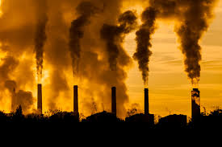
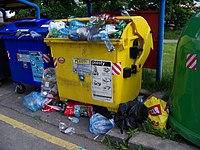
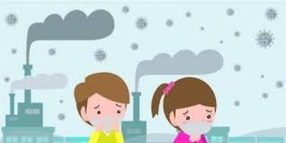

Las sustancias extrañas que provocan la contaminación atmosférica son agentes gaseosos, líquidos y sólidos que se concentran en la atmósfera; sus potenciales
fuentes de origen son las siguientes:
1) Procesos industriales: a pesar de las medidas preventivas constituyen uno de los principales focos contaminantes.
2) Combustiones domésticas e industriales: principalmente los combustibles sólidos (carbón) que producen humos, polvo y dióxido de azufre.
3) Vehículos de motor: su densidad en las regiones muy urbanizadas determina una elevada contaminación atmosférica (óxidos de carbono, plomo, óxidos de nitrógeno,
partículas sólidas). En Estados Unidos son los responsables de cerca de un 60% del peso total de los contaminantes emitidos a la atmósfera, y en París de un 47%
de la contaminación atmosférica. La importancia de cada una de estas fuentes contaminantes es función de la concentración de los agentes emitidos con intensidad
superior a la normal, y de las condiciones meteorológicas locales.
Se han clasificado más de un centenar de sustancias contaminantes de la atmósfera. Las más importantes son el dióxido de azufre, el dióxido de carbono, el monóxido
de carbono, los óxidos de nitrógeno, los compuestos orgánicos volátiles liberados tras una combustión incompleta de los hidrocarburos líquidos (COV), el plomo,
los fluoruros, etc.
El dióxido de azufre es uno de los contaminantes habituales más representativos del aire de nuestras ciudades. Procede de la combustión de carbones o de aceites
minerales utilizados en la producción de energía, en la industria y en la calefacción doméstica, los que pueden llegar a contener azufre en una proporción de 5%.
Al ser quemados dichos combustibles, el azufre es liberado a la atmósfera en forma de dióxido de azufre o gas sulfuroso (SO2).
El principal peligro que presenta el dióxido de azufre son las reacciones químicas, ya que en presencia de humedad ambiental puede transformarse en trióxido de
azufre (SO3), originando aerosoles de ácido sulfúrico (H2SO4), estos aerosoles son sumamente peligrosos en el fenómeno conocido con el nombre de "smog"
(término proveniente del inglés: "smoke", humo, y "fog", niebla).

Humanos
La calidad del aire adverso puede matar a los organismos, incluyendo al hombre. La contaminación con ozono puede producir enfermedades respiratorias, enfermedades
cardiovasculares, inflamaciones de garganta, dolor de pecho y congestión nasal. La contaminación causa muchas enfermedades y estas dependen del contaminante que las
cause; generalmente son enfermedades de los ojos y del aparato respiratorio como la bronquitis, el asma y el enfisema pulmonar.
La contaminación del agua causa aproximadamente 14 000 muertes por día, la mayoría debido a la contaminación de agua potable por aguas negras no tratadas en países
en vías de desarrollo. Un estimado de 700 millones de hindúes no tienen acceso a un sanitario adecuado, 1 000 niños hindúes mueren de enfermedades diarreicas todos
los días.? Alrededor de 500 millones de chinos carecen de acceso al agua potable. 656 000 personas mueren prematuramente cada año en China por la contaminación
del aire. En India, la contaminación del aire se cree causa 527 700 muertes cada año.? Estudios han estimado en cerca de 50 000 muertes en Estados Unidos por
contaminación del aire.
Los derrames de petróleo pueden causar irritación de piel y eflorescencia. La contaminación acústica induce sordera, hipertensión arterial, estrés, y trastorno del
sueño. El envenenamiento por mercurio ha sido asociado al trastornos del desarrollo en niños y síntomas neurológicos. La gente mayor de edad está más expuesta a
enfermedades inducidas por la contaminación del aire. Aquellos con trastornos cardíacos o pulmonares están bajo mayor riesgo. Niños y bebés también están en serio
riesgo. El plomo y otros metales pesados se ha visto que generan problemas neurológicos. Las sustancias químicas y la radiactividad pueden causar cáncer y también
inducir mutaciones genéticas que provocan enfermedades congénitas.
Se ha probado recientemente que la contaminación puede reducir la fertilidad tanto en hombres como mujeres. En hombres reduce la calidad del semen y puede producir
esterilidad. En las mujeres menores a 40 años puede provocar una menopausia precoz debido a una reducción radical de su reserva ovárica.
Ecosistemas
La contaminación se ha encontrado presente ampliamente en el medio ambiente. Existe un amplio número de efectos debido a esto:
Biomagnificación: describe situaciones donde toxinas (como metales pesados o contaminantes orgánicos persistentes, etc.) pueden pasar a través de niveles tróficos,
convirtiéndose exponencialmente en toxinas más concentradas en los niveles tróficos más altos.
La emisión de dióxido de carbono causa el calentamiento global por aumento en su concentración en la atmósfera, y la acidificación de los océanos el
decrecimiento del pH de los océanos de la Tierra debido a la disolución de CO2 en el agua.
La emisión de gases de efecto invernadero conduce al calentamiento global que afecta a ecosistemas en muchas maneras.
Especies invasoras pueden competir con especies nativas y reducir la biodiversidad. Plantas invasivas pueden contribuir con desechos y biomoléculas (alelopatía)
que pueden alterar el suelo y composiciones químicas de un entorno, o incluso reduciendo especies nativas por competitividad.
Óxidos de nitrógeno son removidos del aire por la lluvia y fertilizan la tierra y pueden cambiar la composición de especies en un ecosistema.
El esmog y la neblina pueden reducir la cantidad de luz solar recibida por las plantas para llevar a cabo la fotosíntesis y conducir a la producción de ozono
troposférico que daña a las plantas.
El suelo se puede volver infértil e inviable para plantas. Esto afectará a otros organismos en la cadena trófica.
Dióxido de azufre y óxidos de nitrógeno pueden causar lluvia ácida que baja el valor de pH del suelo y las aguas en donde se precipita.
El enriquecimiento de un ecosistema acuático con nutrientes artificiales trae aparejado una eutrofización, que es un crecimiento desmedido de una especie
generalmente algas verdes unicelulares que afloran en forma desmedida ecosistemas acuáticos, impidiendo el desarrollo de otras especies tanto vegetales como
animales. Esta afloración de algas se suele dar por la contaminación difusa de fertilizantes agroindustriales, desechos de alimento o fecales de la ganadería
industrial, desechos forestales, o desechos orgánicos de una ciudad (aguas servidas).